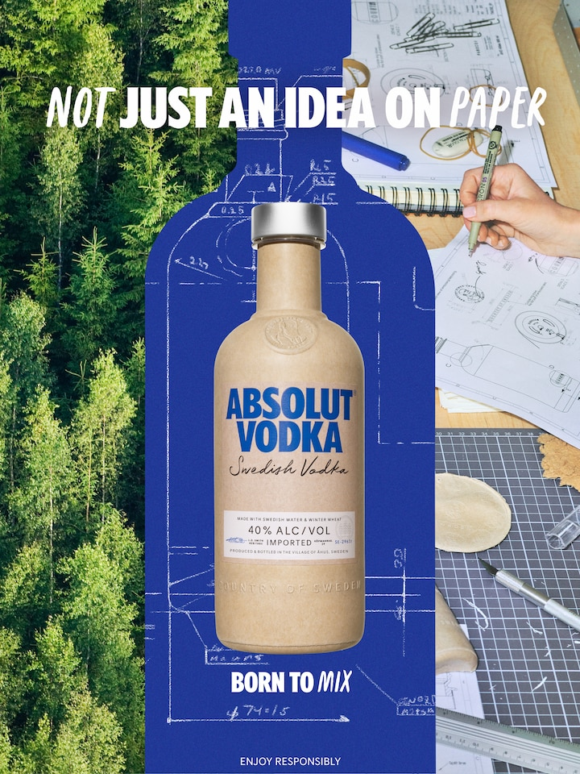
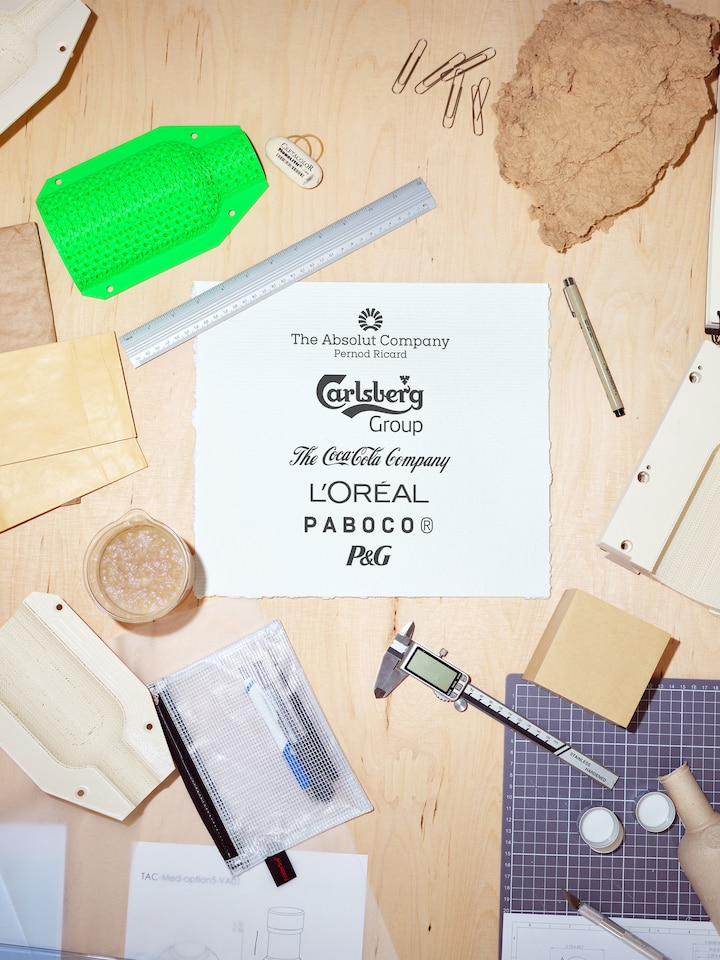

Subkop
we've just begun unbottling the future
No matter what the future holds, we want to make it more sustainable. Our next step is reducing our impact even more. There's still some way to go, but with time, we think our bottles will help create future spirits worth sharing.
An absolut original made to be remade
You can't make an original without beginning at the origins. So starting here with us, you'll find the makings of something beautiful. You'll find the same superb Absolut Original Vodka, but with an even-more sustainable spirit—in new packaging that's just begging to be remade for a better future.

Growing in the right direction
The truth is, paper bottles actually don't grow on trees. They're produced from sustainably-sourced wood fiber. These first-generation single-mould bottles are made from 57% paper with an integrated barrier of recyclable plastic.
We're taking baby steps, minimizing our impact along the way. Until our bottles make the grade becoming fully biobased, we want everyone to do their positive part by thinking of carbon-negative ways to improve our planet.
Our collab is absolut
Sure, we're a spirits brand, but we're also a social brand. Simply said, we're born to mix. So whether that means sharing cocktails, conversations, or collaborations, that's where ideas for a better future happen. That's why we're collabing with Paboco and the Pioneer Community consisting of the global companies Carlsberg, The Coca-Cola Co., Proctor & Gamble and L'Oreal—creating a more sustainable bottle, and future, in the process.
Absolut Paper Bottle is currently only available in selected stores in Manchester, United Kingdom.